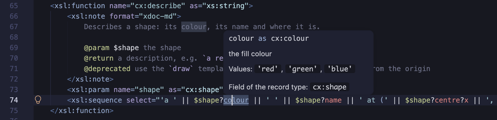
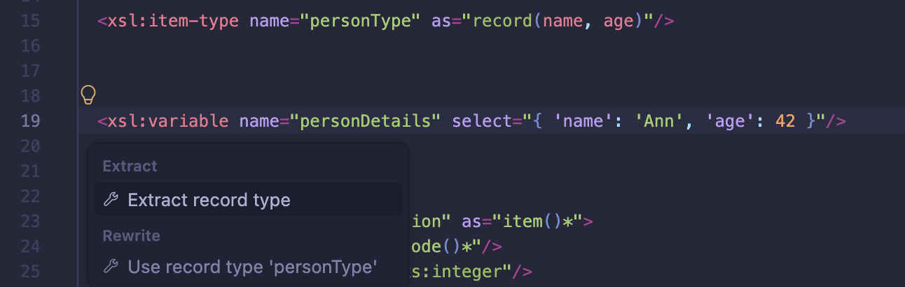
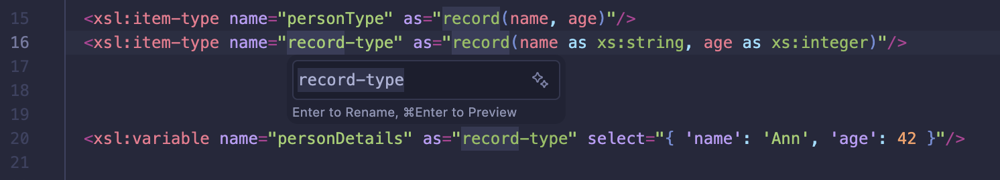
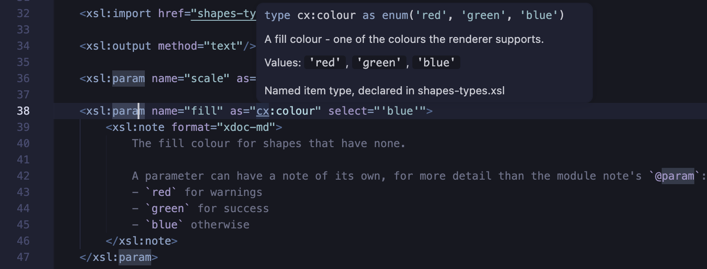
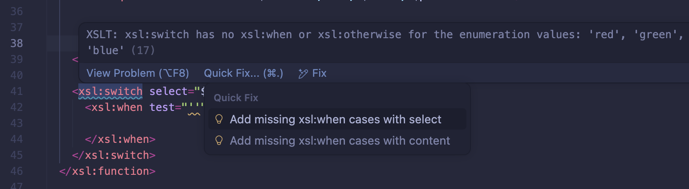

XSLT 4.0: Records and Enums
XPath 4.0 adds record types, for maps with a known set of fields, and
enumeration types, for strings with a known set of values. XSLT 4.0 adds the
xsl:item-type declaration to give these types names.
When a variable, parameter or function result is declared with one of these types, the XSLT/XPath extension uses the declared type for auto-completion, linting, hover help and navigation - for example, to list the fields when building a map, or the values of an enumeration inside a string literal.
These features are enabled when the stylesheet has version="4.0". See the XSLT 4.0 page for the XSLT 4.0 features supported.
For Saxon PE or EE 12.8 or later, run with syntax extensions, they can also be enabled for XSLT 3.0
stylesheets, with the setting XSLT.validation.xslt30ItemTypesAndNotes - see
XSLT 4.0 Item Types and Notes in XSLT 3.0. That page also
describes converting Saxon's earlier saxon:type-alias and tuple(...) syntax.
Declaring types
A record type lists its fields, each with an optional type. A field name followed by ?
is optional. An enumeration type lists its values as string literals:
<xsl:item-type name="address" as="record(city as xs:string, postcode? as xs:string)"/>
<xsl:item-type name="person" as="record(name as xs:string, age as xs:integer, address as address)"/>
<xsl:item-type name="colour" as="enum('red', 'green', 'blue')"/>
A type can also be written inline in an as attribute, for example
as="record(x as xs:double, y as xs:double)".
In an attribute value, quotes within a type can be written as references, as Saxon allows - for example
as="enum("it's", 'is')" or a field name quoted with
' - and the extension reads them as the quotes they stand for.
Auto-completion for types
- Within an
asattribute, and afterinstance of,castable asand the other type operators, the names of declared item types are offered with the built-in types. - The
record(...)andenum(...)suggestions insert a snippet with placeholders for the fields or values.
Checks on declarations
- An item type name that isn't declared is reported, as are duplicate declarations and a type that refers to itself (directly or through other named types).
- A duplicate field name in a record type is an error, as in Saxon. A duplicate value in an enumeration type is a warning, with a Remove duplicate enum value quick fix.
- Extensible record types, such as
record(a, *), have been dropped from XPath 4.0 and are reported as an error.
Go to Definition (F12) and Find All References (⇧⌥F12) work for item type names.
Building records
A record is built with a map constructor, or with the xsl:map instruction. Wherever the
record type is known, the extension helps you complete the map and checks it against the type.
Map constructors
In the select attribute of a declaration with a record type, type { (or
map {) and accept the suggestion to insert a complete map constructor, with an entry for
each required field - when the record has optional fields, a second suggestion includes them too:
<xsl:variable name="p" as="person" select="{
'name': __TODO.name,
'age': __TODO.age,
'address': {
'city': __TODO.city
}
}"/>
Each __TODO.field placeholder is reported as a warning until it's replaced
with a value. A double-click selects the whole placeholder, ready to type over.
After typing , at the end of an entry, the suggestions list the fields that aren't in
the map yet, including optional fields.
The xsl:map instruction
Where a record is built with xsl:map, for example in the content of an
xsl:variable with a record type, typing < offers an
xsl:map suggestion with an xsl:map-entry for each required field (or, as a
second suggestion, for all fields). Inside an
existing xsl:map, the xsl:map-entry suggestions are named after the fields not
yet added, for example xsl:map-entry 'age', and the key attribute offers the
field names.
Checks on records
- Missing fields - a required field that's missing is an error, with an Add missing record fields quick fix that adds an entry, with a placeholder, for each one.
- Unknown fields - an entry for a field that isn't in the record type is a warning.
- Field values - a literal value of the wrong type, such as a string for an
xs:integerfield, is an error. - Duplicate keys - two entries with the same literal key are an error, in any map
constructor or
xsl:map, whether or not it has a record type.
Where the record type comes from
Maps are checked, and completed, where their type is declared:
- the
selector content of anxsl:variable,xsl:paramorxsl:with-paramwith anasattribute - for anxsl:with-paramwithout one, the type of the called template's parameter is used - the result of an
xsl:functionwith anasattribute - its lastxsl:sequence xsl:sequenceandxsl:selectwith anasattribute- the arguments of calls to user-defined functions, including keyword arguments such as
ex:move(point := { ... })and the left-hand operand of the arrow operators - a typed
letbinding, such aslet $p as person := { ... }
Using records
Lookups
After the ? lookup operator on a value with a record type, the suggestions list the
record's fields. This works for variables, calls to functions with a declared record result, and
chains of lookups such as $p?address?city. A lookup of a field that isn't in the record
type is a warning.
Hover and navigation
Hovering over a field name - in a lookup, a map constructor key or the key of an
xsl:map-entry - shows the field's declaration. Go to Definition on a field name goes to
the field in the record type.
Hovering over the name of a named item type - where it's used, or on its declaration - shows its
declaration, with its values for an enumeration type. When the xsl:item-type has a
documentation note, the note is shown too, and a field's
@field text is shown when hovering over the field, and with the field in the
auto-completion suggestions.

Renaming a field
Rename Symbol (F2) on a field name - in the record type, a lookup, a map
constructor key, the key of an xsl:map-entry, or an @field tag
of a documentation note - renames the field, and all its references. Find All References
(⇧⌥F12) lists them.
- Only the field of that record type is renamed - not a field with the same name in another record type.
- The references are found in the stylesheet, the modules it includes or imports, and - from the workspace's modules - each stylesheet that imports or includes it, with the modules they use. So a rename in a module of types reaches the stylesheets that use them.
- A quoted field name keeps its quotes, e.g.
'unit name'. A new name must be an NCName, unless the field's name isn't one.
Path steps on records (JNodes)
XPath 4.0 path expressions can navigate maps and arrays as trees of JNodes. The
jtree() function wraps a map in a tree, so that each field becomes a step:
jtree($p)/address/city/jvalue() (: 'Oxford' :)
Field names are suggested, and checked, for steps after jtree($p)/ and after a variable
declared as a JNode for a record type, for example
<xsl:variable name="j" as="jnode(*, person)" select="jtree($p)"/> followed by
$j/address/city.
Saxon 13 requires jtree() before a / step on a value with a record type -
$p/name is reported as an error, with the suggested fix jtree($p)/name.
Refactoring: Extract record type
When updating XSLT 3.0 code that builds maps, the Extract record type refactoring creates a record type from an existing map:
- Select a map constructor or
xsl:mapwhose keys are string literals - or simply place the cursor on the start tag of thexsl:variable,xsl:param,xsl:with-param,xsl:function,xsl:sequenceorxsl:selectthat it's the value of. - Open the refactorings with the 💡 light-bulb, or ⌘., and choose Extract record type.
- An
xsl:item-typedeclaration is added for the record type, and the declaration'sasattribute is set to it - replacing a generic type such asmap(*). Field types are taken from literal values, and a nested map becomes a nested record type. - The new type is named
record-type, and Rename Symbol is started so you can give it a meaningful name.
If an existing xsl:item-type already has the same field names, a Use record
type 'name' refactoring is also offered, in the Rewrite section of
the list. It sets the as attribute to the existing type without adding a
declaration.


Enumeration types
Auto-completion for values
Where an enumeration type is expected, typing a quote character offers the enumeration's values. This applies to:
- the
selectof anxsl:variable,xsl:paramorxsl:with-paramdeclared with the type (orxs:boolean, fortrue()andfalse()) - arguments of calls to user-defined functions whose parameter has the type, and typed
letbindings - record fields with the type, in map constructors
- the
testof anxsl:whenin anxsl:switch- see below
A string literal that isn't one of the values is reported as an error.
Hovering over the name of an enumeration type - or a global variable or parameter, a parameter of a function or template, or a record field, with the type - lists its values - on one line for a few values, otherwise as a list. For a type declared as another, or as a choice of enumeration types, the values are those it resolves to.

xsl:switch on an enumeration
The XSLT 4.0 xsl:switch instruction selects an xsl:when by comparing a
value with each test. When the select has an enumeration type - a variable,
function call or record field lookup with a declared type - the extension works with its values.
xsl:switch on an enum type.
- A Quick Fix options are shown on any selected xsl:switch element with a (detected) enum type:
- Add missing xsl:when cases with select (self-closing
<xsl:when select=""/>) - Add missing xsl:when cases with content (
<xsl:when>\n<xsl:when/>) - If using auto-complete inside xsl:switch, all xsl:when options remaining for that enum are in the completion-list